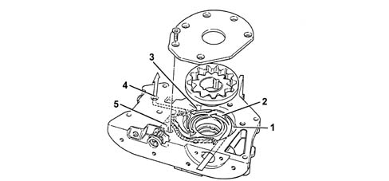
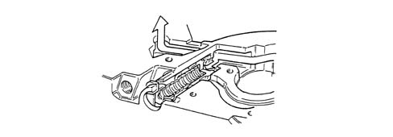
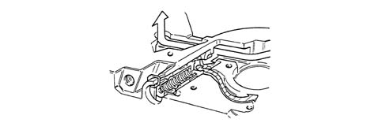
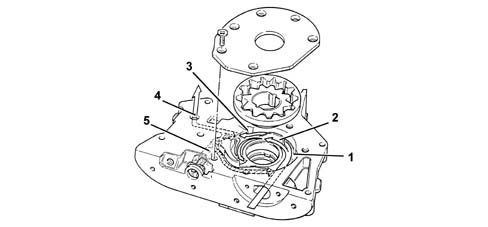
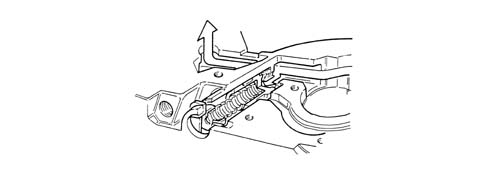
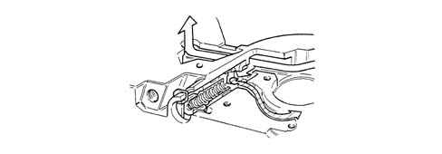
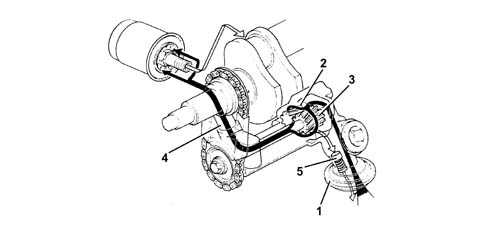
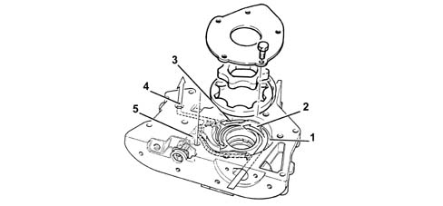
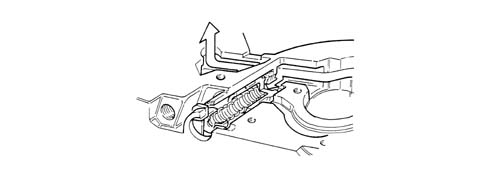
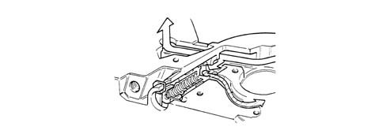

1084B ENGINE OIL LUBRICATION CIRCUIT
- Path
- Descriptions > 10 ENGINE UNIT > 1084 ENGINE LUBRICATION SYSTEM > 1084B ENGINE OIL LUBRICATION CIRCUIT
- Kind
- system description
- Applies to
- all engines; all production periods
- Interactive page
- https://sloeber94.github.io/elrnDB-aGt/en/#/125000306
Applies to: engines: 2.0 JTS; all production periods
CONSTRUCTION SPECIFICATIONS
Engine oil pump
The engine oil is drawn in by the sump by means of the vacuum created by the rotation of the gears on the crankshaft.
There is a vacuum from the partition (2) for the gears as far as the oil sump suction head.
The pressure develops starting from the partition (2) in all the engine supply ducts (4).
The oil pressure in the engine lubrication circuit is 6 bar with the engine at operating temperature in all operating conditions.
When the pressure exceeds 5 bar, the force exerted on the restricter valve (5) overcomes the reaction of the spring underneath and moves the valve until the connecting duct between the pressure chamber (3) and the low pressure chamber (1) opens.

1 - Low pressure chamber
2 - Partition
3 - Pressure chamber
4 - Oil supply duct
5 - Oil pressure restricter valve
ENGINE OIL PRESSURE RESTRICTER VALVE IN CLOSED OPERATING POSITION

ENGINE OIL PRESSURE RESTRICTER VALVE IN SHORT CIRCUIT OPERATING POSITION

Applies to: engines: 1.8 T.SPARK; all production periods
ENGINE OIL PUMP
The engine oil is drawn in by the sump by means of the vacuum created by the rotation of the gears on the crankshaft.
There is a vacuum from the partition (2) for the gears as far as the oil sump suction head.
The pressure develops starting from the partition (2) in all the engine supply ducts. (4).
When the pressure exceeds 5 bar, the force exerted on the restricter valve (5) overcomes the reaction of the spring underneath and moves the valve until the connecting duct between the pressure chamber (3) and the low pressure chamber (1) opens.

1 - Low pressure chamber
2 - Partition
3 - Pressure chamber
4 - Oil supply duct
5 - Oil pressure restricter valve
Engine oil pressure restricter valve closed operating position.

Restricter valve short circuit operating position

Applies to: engines: 3.2 V6; all production periods
OPERATION
Engine oil pump
The engine lubrication circuit is pressurised by a rotary gear pump fastened at the bottom to both front main bearing caps.
The pump is operated by a silent chain drive that transmits drive from the crankshaft to the pump shaft.

1 - Suction head.
2 - Driven gear
3 - Drive gear
4 - Filter oil supply duct
5 - Oil pressure restricter valve
Applies to: engines: 1.9 JTD 16V; all production periods
DESCRIPTION OF COMPONENTS
ENGINE OIL PUMP
The engine oil is drawn in by the sump by means of the vacuum created by the rotation of the gears on the crankshaft.
There is a vacuum from the partition (2) for the gears as far as the oil sump suction head.
The pressure develops starting from the partition (2) in all the engine supply ducts (4).
When the pressure exceeds 5 bar, the force exerted on the restricter valve (5) overcomes the reaction of the spring underneath and moves the valve until the connecting duct between the pressure chamber (3) and the low pressure chamber (1) opens.

1 - Low pressure chamber
2 - Partition
3 - Pressure chamber
4 - Oil supply duct
5 - Oil pressure restricter valve
Engine oil pressure restricter valve closed operating position

Restricter valve short circuit operating position
